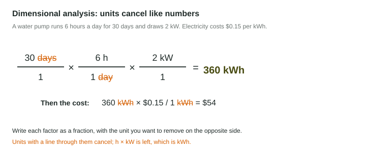

Unit Conversions and Dimensional Analysis
Dimensional analysis converts units by multiplying by conversion factors, fractions equal to 1, arranged so unwanted units cancel.
Part 1 · Hook
Why this matters
Part 2 · Before you start
What this builds on
Part 3 · Prerequisite check
Quick check before you start
1. What does "per capita" mean?
- Per person
- Per year
- Per square kilometer
- Per city
Show the answer
Per capita divides by the number of people.
- Correct: Per person:
- Per year:
- Per square kilometer:
- Per city:
2. Which is written out?
- 750,000,000
- 75,000,000
- 7,500,000,000
- 750,000
Show the answer
Move the point 8 places right.
- Correct: 750,000,000:
- 75,000,000:
- 7,500,000,000:
- 750,000:
Part 4 · See it
See it first

Part 5 · Step by step
How it works, step by step
- Write the starting amount with its unityou know what has to cancel
- Multiply by a conversion factor with that unit on the bottomthe old unit cancels and the new unit is left
- Repeat until only the answer’s unit is leftthe number is right because each factor equals 1
Part 6 · Key ideas
Key ideas
- A conversion factor is a fraction equal to 1, such as 1 kWh / 3,400 BTU or 3.79 L / 1 gal.
- Dimensional analysis: line up factors so each unwanted unit appears once on top and once on the bottom.
- A watt is power (energy per second); a kilowatt-hour is energy. Energy = power × time.
- Energy units: joule, kWh, BTU, kilocalorie. 1 kWh = 3.6 million J, about 3,412 BTU.
Part 7 · Misconception
A common mistake
The wrong idea: Kilowatts and kilowatt-hours are the same thing.
What actually happens: Kilowatts measure how fast energy is used (power). Kilowatt-hours measure how much energy was used: a 2-kW pump running 3 hours uses 6 kWh.
Part 8 · Check yourself
Check yourself
Exam-style questions. Anything you miss goes into your review queue.
1. A water pump draws 2 kW and runs 6 hours a day for 30 days. Write the setup, with units, for the energy it uses, then give the answer in kWh.
Type the setup as on the exam, with brackets and units, then the answer.
Show the answer
- Setup: ; answer 360 kWh
2. Electricity costs $0.15 per kWh. How much does 360 kWh cost?
Type a number, then its unit (dollars). Scale words (2.5 million) and powers of ten (2.5 × 10^6) are read.
Show the answer
- Answer: 54 dollars
3. Which is a unit of power (a rate of energy use) rather than a unit of energy?
- Kilowatt (kW)
- Kilowatt-hour (kWh)
- British thermal unit (BTU)
- Joule (J)
Show the answer
A watt is one joule per second, a rate. kWh, BTU and joules are amounts of energy.
- Correct: Kilowatt (kW): Right: kW is a rate.
- Kilowatt-hour (kWh): A kWh is energy: a kilowatt used for an hour.
- British thermal unit (BTU): A BTU is an amount of heat energy.
- Joule (J): A joule is the SI unit of energy.
Data
Appliances in one home
| Appliance | Power (W) | Hours used per day |
|---|---|---|
| Space heater | 1,500 | 4 |
| Refrigerator | 150 | 24 |
| LED lights (all together) | 60 | 5 |
4. Write the setup, with units, for the energy the space heater uses in one day, in kWh. Then give the answer.
Type the setup as on the exam, with brackets and units, then the answer.
Show the answer
- Setup: ; answer 6 kWh
5. Which appliance uses the most energy in a day?
- Space heater
- Refrigerator
- LED lights
- The heater and refrigerator tie
Show the answer
Per day: heater Wh; refrigerator Wh; lights Wh.
- Correct: Space heater: Right: 6 kWh a day.
- Refrigerator: The refrigerator runs longest but uses 3.6 kWh a day.
- LED lights: The lights use 0.3 kWh a day.
- The heater and refrigerator tie: 6 kWh and 3.6 kWh are not equal.
6. At $0.15 per kWh, how much does it cost to run the refrigerator for 30 days?
Type a number, then its unit (dollars). Scale words (2.5 million) and powers of ten (2.5 × 10^6) are read.
Show the answer
Wh = 3.6 kWh a day; kWh; .
- Answer: 16.2 dollars
7. The family replaces the space heater with one rated 1,000 W, used the same 4 hours a day. How much energy does that save each day?
- 2 kWh
- 0.5 kWh
- 4 kWh
- 500 kWh
Show the answer
Old: 6 kWh a day. New: kWh. Saved: kWh a day.
- Correct: 2 kWh: Right: 6 - 4 = 2 kWh.
- 0.5 kWh: 0.5 kWh is the power difference (500 W) for one hour.
- 4 kWh: 4 kWh is what the new heater uses, not the saving.
- 500 kWh: 500 is the difference in watts, not kWh.
Part 9 · Summary
Summary
Part 10 · Up next
What comes next
Part 11 · Connections